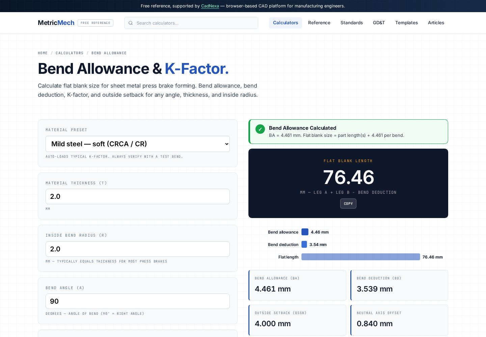

Bend allowance and the K-factor: getting the flat pattern right
Cut a flat blank by simply adding the leg lengths and your folded part comes out long every time. Sheet metal stretches at the bend, and bend allowance plus the K-factor is how you account for it. Here are the formulas, a worked bracket example, and how to find the K-factor your press brake actually produces.

Why a folded part isn't the sum of its sides
When you bend a sheet, the outside of the bend stretches and the inside compresses. Somewhere between them is a line that neither stretches nor compresses — the neutral axis. The true developed (flat) length of the part is the length measured along that neutral axis, not along the outside or the centreline of the material.
If you ignore this and cut a blank equal to the sum of the outside legs, the finished part will be too long, because you've double-counted material in the bend region. On a simple 90° bracket the error is small; on a part with eight bends it stacks up fast and scraps the job.
The K-factor: where the neutral axis sits
The neutral axis does not sit at the middle of the thickness — bending pushes it toward the inside of the bend. The K-factor locates it:
A K of 0.5 would mean the neutral axis stays at mid-thickness (no shift). Real bends shift it inward, so K is below 0.5. Thicker material and tighter inside radii push K lower; generous radii push it back toward 0.5.
The bend allowance formula
Bend allowance (BA) is the arc length of the neutral axis through the bend — the amount of flat material consumed by the bend itself:
Bend deduction — the shop-floor alternative
Many press-brake operators prefer bend deduction (BD) because it works directly from the outside dimensions on the drawing:
A worked example: a 2 mm steel bracket
Take an L-bracket in 2 mm mild steel, single 90° bend, inside radius R = 2 mm, K-factor 0.42. The two legs measured to the outside are 40 mm and 30 mm.
| Step | Calculation | Result |
|---|---|---|
| Bend allowance | (π/180) × 90 × (2 + 0.42×2) | 4.46 mm |
| Outside setback (OSSB) | (2 + 2) × tan(45°) | 4.00 mm |
| Bend deduction | 2 × 4.00 − 4.46 | 3.54 mm |
| Flat by deduction | (40 + 30) − 3.54 | 66.46 mm |
So the flat blank is 66.46 mm, not 70 mm. That 3.54 mm difference is exactly the material the bend "eats." Get it wrong and every bracket is 3.5 mm too long. You can run these numbers instantly in the bend allowance calculator — enter thickness, radius, angle and K-factor and it returns BA, BD and the flat length.
Finding the K-factor your machine actually produces
Published K-factors are starting points, not gospel. Your real K depends on material batch, grain direction, die width, and punch radius. The reliable method:
- Cut a test strip of known flat length in the production material and thickness.
- Bend it 90° on the actual press brake and tooling you'll use.
- Measure the finished outside legs precisely.
- Back-calculate the bend allowance, then solve the BA formula for K.
Do this once per material-thickness-tooling combination and record it. A shop that keeps a K-factor table cuts first-article scrap dramatically.
| Material | Typical K (air bend) |
|---|---|
| Soft / annealed aluminium | 0.33–0.40 |
| Mild steel | 0.40–0.44 |
| Stainless steel | 0.42–0.45 |
| Hard / heat-treated alloys | 0.38–0.42 |
Common bend-allowance mistakes
- Using one K-factor for everything. K varies with radius/thickness ratio and material — keep a table.
- Adding leg lengths directly. Always subtract bend deduction or add bend allowance; never just sum the outside dimensions.
- Mixing inside and outside radius. The formula uses the inside radius R; confuse it with outside radius and BA is wrong by one thickness.
- Ignoring grain direction. Bending parallel to the grain changes springback and effective K, especially in aluminium.
- Trusting CAD defaults blind. CAD ships with a generic K (often 0.5 or 0.44); verify against a test bend before production.
For the dimensional tolerances that govern your formed features, see the ISO 286 fits and tolerances guide, or pull a ready sheet from the templates library.